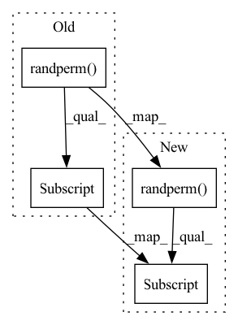

Pattern ID :33607
Before Change
>>> y
tensor([6, 3, 2, 5])
idx = idx or torch.randperm(len(dataset))[:batch_size]
return dataset_to_tensor(Subset(dataset, idx))
def split_dataset(dataset: Union[Dataset, Subset],After Change
tensor([6, 3, 2, 5])
if len(idx) == 0:
idx = torch.randperm(len(dataset))[:batch_size]
else:
idx = torch.as_tensor(idx, dtype=torch.int, device="cpu")
return dataset_to_tensor(Subset(dataset, idx))
In pattern: SUPERPATTERN
Frequency: 4
Non-data size: 4
Instances Fragment ID: 96602887
Project Name: ain-soph/trojanzoo
Commit Name: dfea659b2b94a7dd95d605d24aa513035faa1e7a
Time: 2022-03-09
Author: ain-soph@live.com
File Name: trojanzoo/utils/data.py
M Class Name: AnonimousClass
N Class Name: AnonimousClass
M Method Name: sample_batch(3)
N Method Name: sample_batch(3)
M Parent Class:
N Parent Class:
M File Name: trojanzoo/utils/data.py
N File Name: trojanzoo/utils/data.py
M Start Line: 126
M End Line: 126
N Start Line: 126
N End Line: 130
Before Change
if idx is None:
assert len(dataset) >= batch_size
idx = torch.randperm(len(dataset))[:batch_size]
else:
assert len(dataset) > max(idx)
subset = Subset(dataset, idx)
return dataset_to_list(subset)After Change
>>> y
tensor([6, 3, 2, 5])
idx = idx or torch.randperm(len(dataset))[:batch_size]
return dataset_to_tensor(Subset(dataset, idx))
def split_dataset(dataset: Union[Dataset, Subset], Fragment ID: 96602891
Project Name: ain-soph/trojanzoo
Commit Name: 4a25b9c9bb9c3d032865600d632076283c167843
Time: 2022-02-26
Author: ain-soph@live.com
File Name: trojanzoo/utils/data.py
M Class Name: AnonimousClass
N Class Name: AnonimousClass
M Method Name: sample_batch(3)
N Method Name: sample_batch(3)
M Parent Class:
N Parent Class:
M File Name: trojanzoo/utils/data.py
N File Name: trojanzoo/utils/data.py
M Start Line: 150
M End Line: 156
N Start Line: 123
N End Line: 124
Before Change
self.max_samples = self.n_samples if max_samples is None else max_samples
def __iter__(self):
return iter(torch.randperm(self.n_samples)[: self.max_samples] )
def __len__(self):
return self.max_samplesAfter Change
def __iter__(self):
if not self.corr_mode:
yield from torch.randperm(self.n_obs)[: self.n_samples]
else:
for _ in range(self.n_batch):
batch = np.random.choice(self.batch_list)
yield from self.choice(torch.where(self.batches == batch)[0]) Fragment ID: 96602889
Project Name: mics-lab/scyan
Commit Name: 21be5d938a79ffbeb98f141f0d3bbebe273591d8
Time: 2023-01-04
Author: quentin.blampey@student.ecp.fr
File Name: scyan/data/tensors.py
M Class Name: RandomSampler
N Class Name: RandomSampler
M Method Name: __iter__(1)
N Method Name: __iter__(1)
M Parent Class: torch.utils.data.Sampler
N Parent Class: torch.utils.data.Sampler
M File Name: scyan/data/tensors.py
N File Name: scyan/data/tensors.py
M Start Line: 35
M End Line: 35
N Start Line: 62
N End Line: 69
Before Change
if init:
max_iters = max(KMEAN_INIT_ITERS, max_iters)
means = x.transpose(0, 1).contiguous().view(t, -1, d)
means = means[:, torch.randperm(num_clusters, device=x.device)[:num_clusters] ]
se = None
After Change
if init:
max_iters = max(KMEAN_INIT_ITERS, max_iters)
means = x.transpose(0, 1).contiguous().view(h, -1, d)
indices = torch.randperm(means.size(1), device=x.device)[:num_clusters]
means = means[:, indices]
buckets = dists = se = None
Fragment ID: 96602893
Project Name: lucidrains/routing-transformer
Commit Name: 7066f4fb2505744791a8113dde847e2ff6a3f18a
Time: 2020-05-25
Author: lucidrains@gmail.com
File Name: routing_transformer/routing_transformer.py
M Class Name: AnonimousClass
N Class Name: AnonimousClass
M Method Name: kmeans(5)
N Method Name: kmeans(5)
M Parent Class:
N Parent Class:
M File Name: routing_transformer/routing_transformer.py
N File Name: routing_transformer/routing_transformer.py
M Start Line: 86
M End Line: 101
N Start Line: 98
N End Line: 117